人應如何
活出？
當我們知道了應如何生活，
卻發現「我做不到」。
靈性修養
14:20–17:20 博雅 406
今天的四段路
- 壹 命名爭戰，解剖靈性困境
- 貳 內在戰場與修練之道
- 參 體驗活動：施與受
- 肆 結語
靈性修養，是什麼
靈性
人的「主體性」「我性」——統整我這個人、指揮身心，追求圓滿與至善的那種潛能。
靈性健康
靈魂的健康，是身體、心理、關係等全人健康的樞紐。
靈性修養
「操則存，舍則亡」——如同身體需要鍛鍊，靈性也需要持續操練才會顯現。《孟子·告子上》引孔子語
靈性修養是一場無止境的朝聖旅程——在行住坐臥的每一刻，透過覺察、選擇與行動，邁向圓滿。
靈修六原則
- 在每一個人身上，看見神、看見佛、看見人
- 第一個去愛、第一個去給
- 給人信心、給人歡喜、給人希望、給人方便
- 緩於發怒、敏於寬恕、勇於道歉、時時感恩
- 擇善固執、不變隨緣
- 誠意正心、戒慎恐懼
這六句，是你們這學期寫五份靈修週記時，在生活中操練的功夫。
命名爭戰，解剖靈性困境
人人都有靈性困境與幽暗；逐一攤開，為它們命名。
面對掙扎的第一步：替它命名
這學期的五份靈修週記裡，你們已經寫下不少境界現前時的掙扎。能精準說出「我卡在哪裡」，本身就是靈性覺察的運作——也是面對它的第一步。
接下來，我們用一張整全的「靈性掙扎地圖」，把這些課題安頓進來、看清楚它們的位置。
一般的靈性量表，談的都是靈性健康或不健康，而沒有正視靈性的掙扎與人性的幽暗。
靈性掙扎地圖：你卡在哪一種關係裡？
人的靈性，總在「關係」中展現；窮盡人的關係，正好是四個領域——掙扎，就發生在每一種關係裡。
我與自己
意義感的失落、無法自我接納或超越、內在不平靜、困在過去、明知該在意卻提不起勁。
我與他人
自私、嫉妒、易怒、記仇、冷漠、不同理；愛與連結的困難；難以寬恕、懺悔、和解。
我與物
被金錢與名利綑綁、貪求與比較、「役於物」而非役物、與自然失去連結。
我與超越者 有信仰者
終極信念的迷失、信仰的懷疑、對神的憤怒或被遺棄感、祈禱裡的枯竭。
還有一條貫穿四領域的跨領域掙扎：人格統整與知行合一——知道卻做不到。
四領域（我／人／物／天）架構出自 John W. Fisher (2011), The four domains model, Religions 2(1), 17–28；「跨領域」一項與整體的批判重構，見孫效智〈以生命教育為核心重構主流靈性健康理論〉（2025）。
古人，早就為這些靈性困境命名了
不論有沒有宗教信仰，這些「心的染污」「靈魂的病灶」是每個人都有的——換成現代白話，你一定認得：
佛教 · 五毒心
| 貪 | 想要更多、買不停、貪求名利與地位 |
| 嗔 | 易怒、記仇、看不順眼就開砲 |
| 癡 | 看不清真相、被妄念與假訊息帶著走 |
| 慢 | 自我中心、瞧不起人、愛比較 |
| 疑 | 猜忌、不信任、無法交託 |
基督宗教 · 七罪宗
| 驕傲 | 以自我為中心、聽不進別人 |
| 嫉妒 | 見不得別人好、酸言酸語 |
| 忿怒 | 一點就爆、報復心強 |
| 懶惰 | 提不起勁、滑手機逃避（acedia） |
| 慳吝 | 對錢財權力永不滿足、囤積而不願給予 |
| 迷色 | 放縱慾望、被感官牽著走 |
| 貪饕 | 飲食或感官享受無節制、成癮 |
它們不是用來定罪，而是一面鏡子——照出我們共同的靈性困境。
最普遍的一條：知道，卻做不到
「我所願意的善，我不去行；
而我所不願意的惡，我卻去作……
我這個人真不幸呀！」
保祿，《羅馬書》7:19、24（思高版）
這是貫穿所有領域的跨領域掙扎——人格統整與知行合一。王陽明說「知而不行，只是未知」。它有兩個根源：知之模糊，以及人性的幽暗與軟弱，拉扯著情感、慾望與理智背道而馳。
為自己的靈性掙扎命名
每位組員說出此刻最想面對的那個靈性掙扎，用 1–3 個關鍵詞為它命名。
全組討論後，由一位同學掃本組的 QR 碼，把討論的內容送出。
掃碼送出：為自己的靈性掙扎命名
由一位同學代表把本組討論的內容送出。
為自己的靈性掙扎命名
為自己的靈性掙扎命名
把你們的課題，放上地圖
回頭看各組剛送出的靈性掙扎——它主要落在哪一個關係領域？（我／人／物／天，或那條貫穿一切的「知行不一」）
- 同一個課題，常常同時牽動好幾個領域——這很正常。
- 試著「精準命名」：不是「我最近不好」，而是「我卡在與物的貪求」「我卡在與他人的難以寬恕」。
- 命名得越準，越知道可以從哪裡下手。
命名，不是承認失敗
「只談『健康』的靈性理論，很難安頓人性的黑暗與軟弱；靈性修養則直面這些挑戰，並將其視為靈性成長不可或缺的部分。」
孫效智〈以生命教育為核心重構主流靈性健康理論〉（2025）
- 掙扎 ≠ 失敗：能覺察、能命名自己的幽暗，正是靈性「覺性」在運作、是邁向人格統整的起點。
- 你不孤單：五毒、七罪跨越文明平行存在——這是全人類共同的功課。
- 掙扎可以轉化：接納而不姑息；「念起即覺，覺之即無」——心毒與罪宗將成為鍛鍊我們轉識成智的道場。
內在戰場與修練之道
先直視內在戰場的真相；再談談你們自己的靈修心得，也借鏡東西方宗教文化裡的靈修智慧。
選擇是一座冰山
 冰山照：Uwe Kils／Wikimedia Commons, CC BY-SA 3.0
冰山照：Uwe Kils／Wikimedia Commons, CC BY-SA 3.0
念頭「進門」那一瞬——是選擇這座冰山水面下的一個悸動。但從起心動念到真正拍板，水面下還藏著一整座「選擇」的冰山。看懂它，才能在內在戰場「從頭到尾」保持覺醒。
選擇現象學——探究人的選擇，瞭解其性質、背後因素與歷程的學問。為什麼值得探究？因為「選擇形塑我，也形塑我的人生」。
（孟子：「學問之道無他，求其放心而已矣」；曾子：「吾日三省吾身」。）
選擇現象學：追到人生盡頭（Trace to the End）
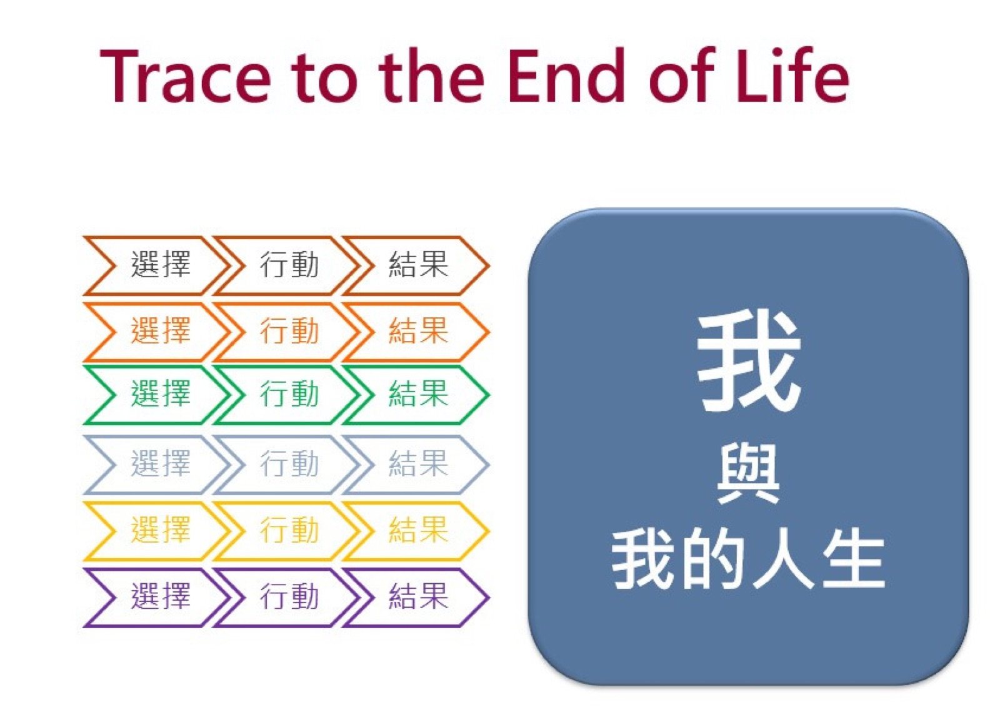
先往前看：一個個「選擇→行動→結果」不斷累積，最終形塑「我，與我的人生」。
今天一個小選擇看似微不足道；但無數選擇串起來，會一路延伸、影響到人生的盡頭——這就是為什麼，選擇值得我們認真對待。
選擇現象學：追溯選擇根源（Trace to the Root）
從表面的「選擇」，一層一層追本溯源，直到最深處。
最深處，是理性與非理性因素之間的靈性爭戰：靈性與覺性代表朝向終極信念與理想的理性因素，情緒、五毒心、七罪宗等則代表非理性因素。靈性（或覺性）是否以及如何起作用，將決定非理性因素的影響，因此左右一個人的選擇。
覺察心法：守在念頭的門口
一個壞念頭冒出來，並不等於你犯了錯——它只是「來敲門」。真正決定好壞的，是你怎麼接待它。
之前，我們學著為既有的靈性掙扎命名；
現在更早一步——趁念頭還在門口、還沒在心裡扎根長成掙扎，
就先認出它、叫出它的名字。
這份守望的功夫，靈修傳統稱為 νῆψις（nepsis）——我們給它一個好記的名字：「覺察心法」。它是一門看顧內心、守望念頭的學問：時時保持清醒，在念頭剛起的那一刻就認出它。這是一切內在修養的地基。
名詞小註｜這是基督宗教「沙漠教父」（三、四世紀退隱埃及曠野的隱修者）的洞見。厄瓦格力烏（Evagrius，約 345–399）最早把這些擾人的念頭（希臘文 λογισμοί／logismoi，即「念頭」）整理成「八種惡念」，日後成為西方「七罪宗」的前身。
當下三問：吾日三省吾身
一問比一問深——像曾子「三省吾身」，一層層把我們划向生命的深處。
潛下去，再浮上來：全程的覺醒
「當下三問」引領我們一層一層划向生命深處——潛到底，再帶著答案浮回生活：
門口的 覺察心法（守住起心動念）＋ 看懂整座冰山（潛到底的覺察）＝ 內在戰場「從頭到尾」的覺醒，最終接上人生三問：為何而活、如何而活、如何知行合一。
這場靈性的戰役，你怎麼打？
一個念頭一旦侵門踏戶，慢慢就會成為你的習氣或習性，成為難以去除、必須長期奮戰的靈性掙扎。透過「覺察心法」，回頭看你最想面對的那個念頭——
- 面對它，你曾經受過什麼挫折？從中學到了什麼？
- 後來，你摸索出什麼好的靈修方法或心法，讓自己在這場戰役中慢慢致勝？
全組討論後，由一位同學掃本組的 QR 碼，把討論的內容送出。
掃碼送出：這場靈性的戰役，你怎麼打？
由一位同學代表把本組討論的內容送出。
這場靈性的戰役，你怎麼打？
這場靈性的戰役，你怎麼打？
東西方的靈修法門與智慧
前面談過同學們的靈修經驗與心得，接下來我們看看能從東西方的靈修智慧學習到什麼。
這些智慧跨越了宗教與文化，相互補充也相互應證。
萬惡之首是驕傲
無論東西方的思想都認為，最根源的靈性困境是驕傲或我執。它悄悄地把「我」放在中心與最高的位置：我最重要、我說了算、我不會錯。因為它偽裝成「我對」「我行」，所以最難被自己看見。
它是一切惡的根源
不是先犯了某件壞事，而是那顆「我不能錯、我最重要」的心——底下才長出貪求、易怒、不肯認錯與道歉。拔掉這個根，很多毛病會一起鬆動。
多瑪斯・阿奎那：驕傲是眾罪之始
連做好事也會栽
一開始只是真心想做對的事、幫助人——但慢慢會覺得「只有我看得懂、只有我做得到」，聽不進不同意見，甚至為了「堅持對的事」傷了身邊的人。關鍵不在起點多良善，而在它把你帶向謙卑平安，還是帶向論斷不安。
依納爵《神操》辨別內心動向的智慧
五毒心的克制 酒色財氣的超越
生活裡常聽到的酒色財氣，所代表的問題正是東西方宗教所說的五毒心或七罪宗——名字不同，指的是同一組人性幽暗。
酒
各種成癮與習氣：手機成癮、網路成癮、工作成癮、酒癮毒癮
色
對表相的虛幻執著，生物性盲目慾求
財
盲目的佔有與貪欲，分不清「需要」與「想要」
氣
EQ 的低落、憤怒、盲目的衝動
孫效智歷年「靈性修養」工作坊講義（如：職場靈修 2020 中原大學；靈修學導論與靈修六原則）
心猿意馬：修行，沒有捷徑
師徒四人，其實是一個人修行的四種內在力量——
- 孫悟空心思意念飄忽不定，很難安住。
- 豬八戒慾望，被寬容的慾望。
- 沙和尚理性與邏輯。
- 白龍馬前往西方取經的堅定意志。
修行沒有捷徑：靠堅定意志，馱著那顆難安的心，一步步安頓慾望與理智。
我與他人：接住情緒，不接收垃圾
對治：易怒、記仇、嫉妒、難寬恕。「生命是 10% 發生在你身上的事，加上 90% 你如何回應。」（Charles R. Swindoll）
他們的情緒是他們的垃圾——你可以選擇不接收。至於已經接住的怨氣怎麼放下，等一下我們會學幾套具體的功夫。
年少行者的開悟五步驟
不丹「毘盧遮那仁波切」——被認證為千年前譯經大師的轉世靈童，這場開示時年僅九歲，親口說出他的開悟五步驟：
- 一不執著於任何事物。
- 二不輕易對人動怒——把自己放到對方的角度。
- 三不報復——冤冤相報，是沒有止境的循環。
- 四聽到搬弄是非，不隨之動怒；反而說對方的好話。
- 五這一切都在你的心中——能降伏自己的心，你就覺悟了。
影片：毘盧遮那仁波切越南開示（本人親講，中英字幕）／九如本真人生
有沒有所有宗派都認同的法門？
十三歲的他在法會上接受提問——
- 問一有無不屬於任何宗派、傳承或語言、適用一切傳承的法門？
答：一句祈願便已具足——「願一切眾生獲得安樂，願一切眾生獲得平安」，任何語言皆可，晨起睡前真誠念誦。 - 問二如何分辨清明的認知與被情緒左右的念頭？
答：別把他人的惡意執著在心——他仍在無明之中。如樹下被打的修行者：看見「問題不在那個人，而在支配他的無明」，在寬恕的那一刻生起智慧。 - 結語安樂、平靜或痛苦，一切狀態皆由心生——學會專注、調伏自心，把覺知帶回身體；祝願若沒有自身的實踐，無法真正實現。
影片：毘盧遮那仁波切法會問答（中文旁白轉述，1:19 起）／灿烂千阳
慈心觀（Metta）：把那句祈願變成日常練習
仁波切說「一句祈願便已具足」。慈心觀就是這句祈願的操練：反覆在心裡對人說祝福——「願你平安、願你健康、願你自在」，順序由近而遠：
卡的是「難相處的人」那一層
前面幾層都不難。這個練習的用意正是：你有能力對討厭的人生出善意——而且練久了，會變容易。
從「自己」開始，也是重點
對自己苛刻的人，很難真心祝福別人。先願自己平安，才有餘裕把祝福送出去。
REACH 寬恕：五步放下對一個人的怨
把「寬恕」變成走得完的路。reach 也是「伸出手」——伸手向對方，也伸手把自己從怨恨裡拉出來。
| R 回想 | Recall the hurt——誠實面對那件事，不假裝沒發生。 |
| E 同理 | Empathize——試著想「他當時在想什麼、怕什麼」；不是替他找藉口，是理解他為什麼那樣做。 |
| A 當禮物送出 | Altruistic gift——寬恕不是對方賺來的，是你決定給的；想想你自己也曾被原諒過。 |
| C 立志 | Commit——明確對自己說「我決定原諒了」，甚至寫下來。 |
| H 守住 | Hold on——之後怨氣還會回來，那不代表失敗；提醒自己「我已經決定過了」。 |
寬恕是你自己的功課：不需要對方道歉或改變，也不等於和好、不等於容忍。
Everett L. Worthington Jr.（維吉尼亞聯邦大學心理學教授）；1995 年他的母親遭謀殺——這套模型是他親身走過的功課
依納爵靈修的寶富：西方的修練功夫
原則與基礎——一生的心靈地圖
- 《神操》「原則與基礎」（Fleming SJ 當代讀法）：人是受造的——我們不是自己的創造者，而有一位愛我們、渴望與我們相通的天主。
- 因此，生命中的每一事物，若非使我們更接近這份關係，就是使我們遠離。
- 修練：不緊抓任何事物——與萬物保持一點距離，先問「它使我更靠近、還是更遠離天主？」——如同與摯友晚餐，去哪家餐廳不重要，重點是與所愛的人同在。
意識省察——聖依納爵親傳的五步祈禱
- ①覺察臨在：從一天的紛擾抽身，迎接天主。②感恩：求祂幫助辨認祂在我生命中的行動。
- ③具體回顧這一天：哪些互動勾起強烈感受？求天主幫我看見感受底下的東西。④反省我的參與：靠近了還是遠離了天主？該求寬恕、或該慶賀？
- ⑤迎向明天：哪裡需要倚靠恩寵、被召叫做什麼？——透過感受與渴望，天主一直在對我們說話。
影片：耶穌會《25 個依納爵靈修的寶富》系列（英語講述，中文字幕）／耶穌會中華省
體驗活動
從一場「五個正方形」的無聲遊戲，走進溝通、同理與關懷服務的省思。
各組準備工作
- 每組有 5 個信封（A、B、C、D、E），一人負責一個；組員不足 5 人的組，由一位組員負責兩個信封
- 例如 A ④：表示 A 信封內，有 4 張 A 拼塊
- 請先確認：信封內的拼塊數目，是否符合信封上的數字
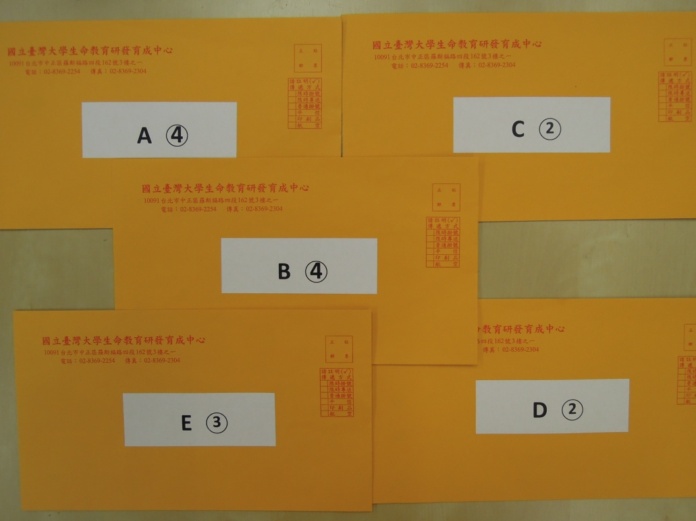
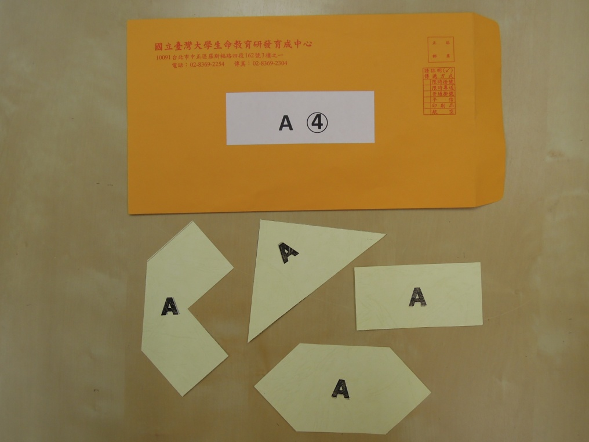
活動進行方式
目標：每一組、每一人要拼出一個正方形。
(每組要拼出5 個相同的正方形)
- 只可以給出你自己的紙片，
- 不可以拿取別人的紙片
- 全程保持安靜：
- 不可說話
- 不可動作示意
- 不可以眼傳神
五個正方形的卡關與突破
- 回顧一下完成任務的過程，有什麼卡關的地方？關鍵的突破點是什麼？
- 如果重新再來一次，怎麼做比較好？
全組討論後，由一位同學掃本組的 QR 碼，把討論的內容送出。
掃碼送出：五個正方形的卡關與突破
由一位同學代表把本組討論的內容送出。
五個正方形的卡關與突破
五個正方形的卡關與突破
活動進行方式
- 小組討論
- 全體分享
- 回饋時間
施與受的反思
愛的平衡與藝術
團隊合作 (1/2)
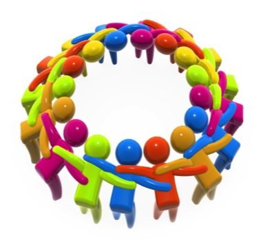
彼此效力
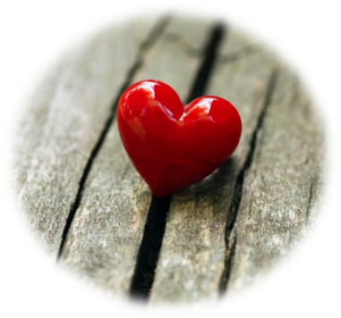
團隊合作 (2/2)
一盤散沙
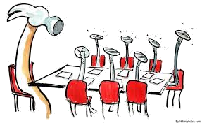
團隊成功關鍵
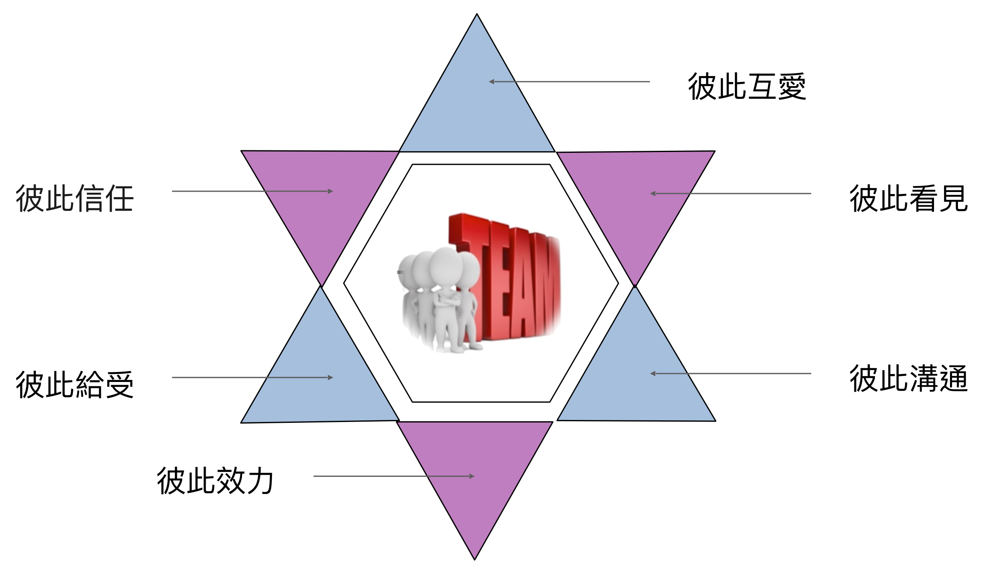
給予的省思
- 「給」的品質以愛與看見的品質為前提
- 否則
- 只是把不要的給別人
- 只看自己，無心也無暇看見別人的需要
- 看別人看得「太」清楚，失去愛與感恩的情懷，不能認同，想要干涉
- 只有「給」沒有「受」會如何？
接受的省思
- 人是要先接受，才能懂得給
- 當別人用心注意到我們的需要時，我們會領受到一份生命的禮物
- 當別人把他不要的東西塞給我們時， 大概不會是被愛與被看見的感覺
- 每個人都有盲點：有時別人注意到我們的需要時，我們卻沒有意識到。我們需要別人。
- 只有接受，沒有付出會怎樣？
自我給予與自我充實的平衡
- 給很重要，生命中要學習給
- 休息是為了走更長的路，人要給，但也要不斷充電與休息
- 自我充實很重要，自我如果沒有智慧、沒有熱情、沒有愛，也就沒有什麼東西可以給
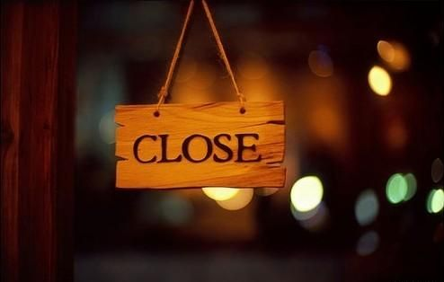
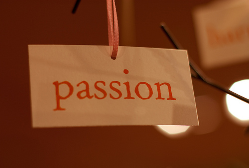
完成自我、犧牲小我、完成大我
- 有時候自己的部分已經完成了，可是團隊一直有人無法完成他的部分，該怎麼辦？
- 是否該打破自己？重組自己？抑或該維持自己的現狀？這很需要分辨的智慧
- 人要預備好為了完成大我而超越自我，但這並不表示打破自我就是正確的選擇。
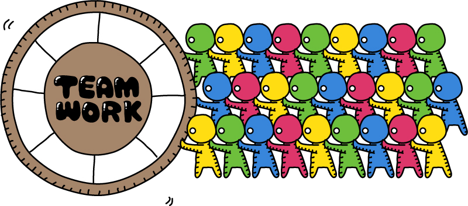
利益與公義
- 鋌而走險的誘惑
- 為了利益，罔顧公義的誘惑
- 人要學習寬以待人，嚴以律己
- 在被愛與被諒解的經驗中得到力量，而能逐漸往知行合一的方向邁進
溝通的省思
- 人需要溝通，但很多時候，不容易溝通，甚至無法溝通
- 尊重溝通的限度，耐心等待溝通的時間，從其他方面建立彼此的連結與看見，是人生很重要的功課與挑戰，需要智慧與愛心
- 在不能溝通的等待中，用心體會對方的需要與困難
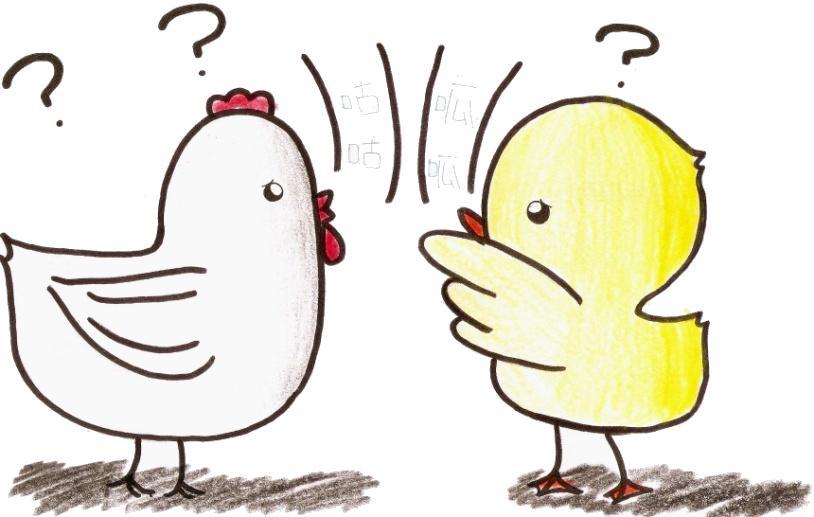
王陽明「大學問」
大人者，以天地萬物為一體者也。其視天下猶一家，中國猶一人焉。若夫間形骸而分爾我者，小人矣。大人之能以天地萬物為一體也，非意之也，其心之仁本若是，其與天地萬物而為一也，豈惟大人，雖小人之心亦莫不然，彼顧自小之耳。是故見孺子之入井而必有怵惕惻隱之心焉，是其仁之與孺子而為一體也。孺子猶同類者也，見鳥獸之哀鳴觳觫，而必有不忍之心，是其仁之與鳥獸而為一體也。鳥獸猶有知覺者也，見草木之摧折而必有憫恤之心焉，是其仁之與草木而為一體也。草木猶有生意者也，見瓦石之毀壞而必有顧惜之心焉，是其仁之與瓦石而為一體也。是其一體之仁也，雖小人之心亦必有之。是乃根於天命之性，而自然靈昭不昧者也，是故謂之「明德」。……是故苟無私慾之蔽，則雖小人之心，而其一體之仁猶大人也；一有私慾之蔽，則雖大人之心，而其分隔隘陋猶小人矣。故夫為大人之學者，亦惟去其私慾之蔽，以明其明德，復其天地萬物一體之本然而已耳。非能於本體之外，而有所增益之也。
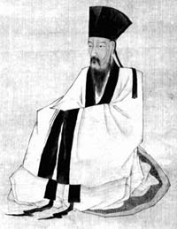
微電影欣賞-路過
生命課題的省思
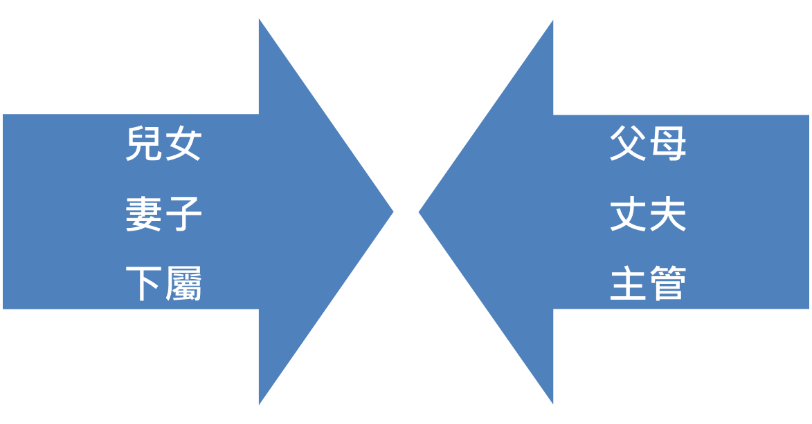
愛的雙向性，施與受的平衡
施與受的正向循環
- 對別人用心，別人快樂，看到別人快樂，自己快樂
- 體會別人用心，自己快樂，同時也會升起感恩之心。快樂會散播，讓更多人快樂；感恩則讓用心的人得到安慰與鼓勵
通往至善的兩條途徑
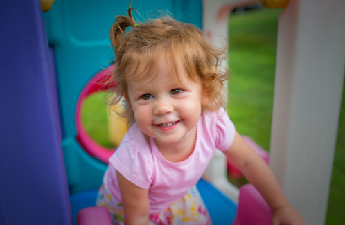
幸福與愛有何關係？
結語
回顧靈性修養如何貫穿五大素養。
為什麼，靈性修養是樞紐
走到這裡你會發現：靈性修養不是五大素養旁邊的一項，而是貫穿其中的水分與養分——依五大核心素養的次序來看，它居中為樞紐：
- 終極關懷（定方向）——靈性的覺醒，縮短人與終極理想的距離。
- 價值思辨（定道路）——靈性的反思，讓價值判斷更有深度與方向。
- 靈性修養（給動力）——它是人通往人格統整與知行合一的途徑。
- 人學探索（基礎）——靈性的自覺，讓人深入「人是什麼」的殿堂。
- 思考素養（方法）——靈性的覺察與反思，正是後設思考的核心。
為活動中展現最佳默契與合作的小組喝采
祝福大家
心中有愛 身心靈無礙
下週見
W14（12/9）見樹又見林——人生三問與五大核心素養的整體圖像
課前作業⑥
引用來源
- 《孟子·告子上》引孔子語
- 四領域（我／人／物／天）架構出自 John W. Fisher (2011), The four domains model, Religions 2(1), 17–28；「跨領域」一項與整體的批判重構，見孫效智〈以生命教育為核心重構主流靈性健康理論〉（2025）。
- 保祿，《羅馬書》7:19、24（思高版）
- 王陽明〈大學問〉
- 孫效智〈以生命教育為核心重構主流靈性健康理論〉（2025）
- 冰山照：Uwe Kils／Wikimedia Commons, CC BY-SA 3.0
- 孫效智歷年「靈性修養」工作坊講義（如：職場靈修 2020 中原大學；靈修學導論與靈修六原則）
- 影片：毘盧遮那仁波切越南開示（本人親講，中英字幕）／九如本真人生
- 影片：毘盧遮那仁波切法會問答（中文旁白轉述，1:19 起）／灿烂千阳
- Everett L. Worthington Jr.（維吉尼亞聯邦大學心理學教授）；1995 年他的母親遭謀殺——這套模型是他親身走過的功課
- 影片：耶穌會《25 個依納爵靈修的寶富》系列（英語講述，中文字幕）／耶穌會中華省
- 影片：西遊記你讀懂了嗎（YouTube：https://youtu.be/cFmJt8iBAfU）
- 影片：垃圾人定律（YouTube：https://youtu.be/JFsQftmyPc0）
- 影片：親情微電影：路過（YouTube：https://youtu.be/E-qpG4gZoCY）
彩蛋·主題曲〈知與行之間〉
〔主歌〕
我知道 該對她溫柔一點
話到嘴邊 卻還是變成了刀
保祿也嘆息過——我願意的善 偏偏不去行
知道，到做到 中間隔著一整條河
〔副歌〕
操則存，舍則亡
這顆心 一鬆手 就溜走
不是懂了就會 是練了才能
那是一生的功夫 一步一步
走在知與行之間
〔尾聲｜輕誦〕
夜裡回望這一天——祂在哪裡 我在哪裡
守在念頭的門口 輕輕發願：
願一切眾生安樂 願一切眾生平安
吸氣，吐氣——
知，與行，慢慢 合而為一